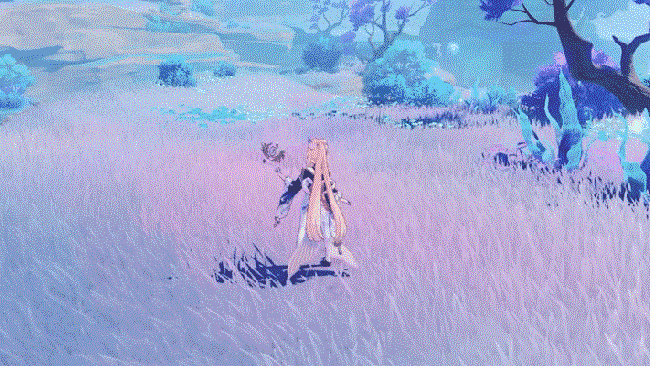
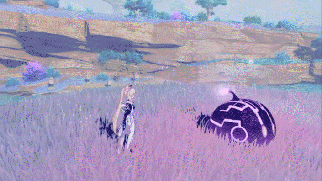
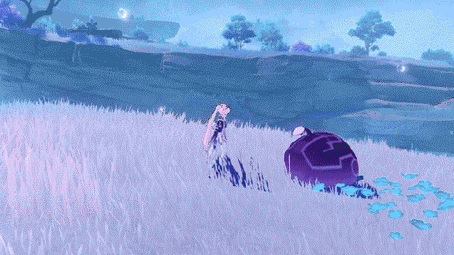

珊瑚宫心海 - 战斗天赋
普通攻击•水有常形
普通攻击
以水元素幻造成的游鱼进行至多三段的攻击，造成水元素伤害。
重击
消耗一定体力，短暂咏唱后，造成水元素范围伤害。
下落攻击
凝聚水元素的力量，从空中下坠冲击地面，攻击下落路径上的敌人，并在落地时造成水元素范围伤害。

海月之誓
召唤能够治愈同伴的幻造水之生命「化海月」。
施放的瞬间，为珊瑚宫心海施加潮湿状态。
化海月
每隔一段时间。对周围的敌人造成水元素伤害，并为周围的当前场上角色恢复生命值，回复量受益于珊瑚宫心海的生命值上限。
为了保持完美的工作状态，心海需要及时补充自己的「能量」。

海人化羽
请降海祇的力量，对周围的敌人造成水元素伤害，并披上珊瑚宫之水汇聚而成的「仪来羽衣」。
仪来羽衣
·增加珊瑚宫心海的普通攻击、重击以及元素战技的「化海月」造成的伤害，增加值基于珊瑚宫心海的生命值上限；
·普通攻击和重击命中敌人时，为队伍中附近的所有角色恢复生命值，回复量受益于珊瑚宫心海的生命值上限；
·提升珊瑚宫心海的抗打断能力，并使她能在水面上移动。
效果将在珊瑚宫心海退场时解除。
萦绕在周身的清光化为羽衣，辉映着珊瑚宫大人的堂堂之姿。
